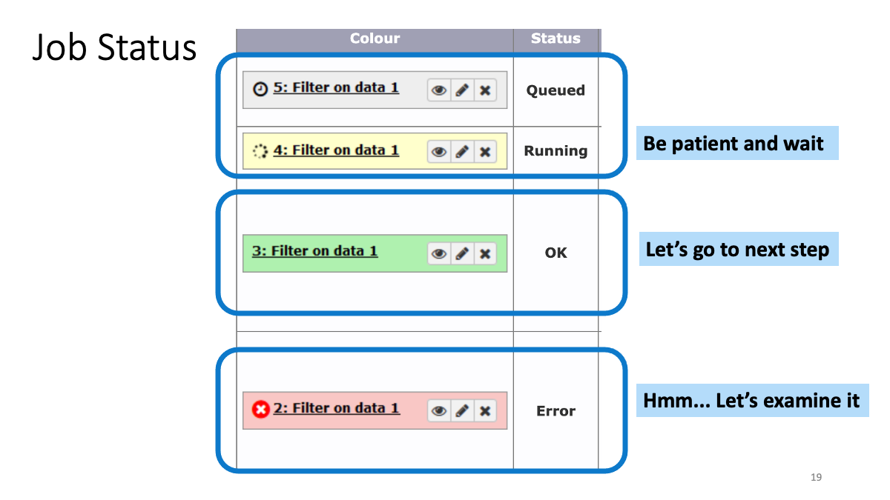
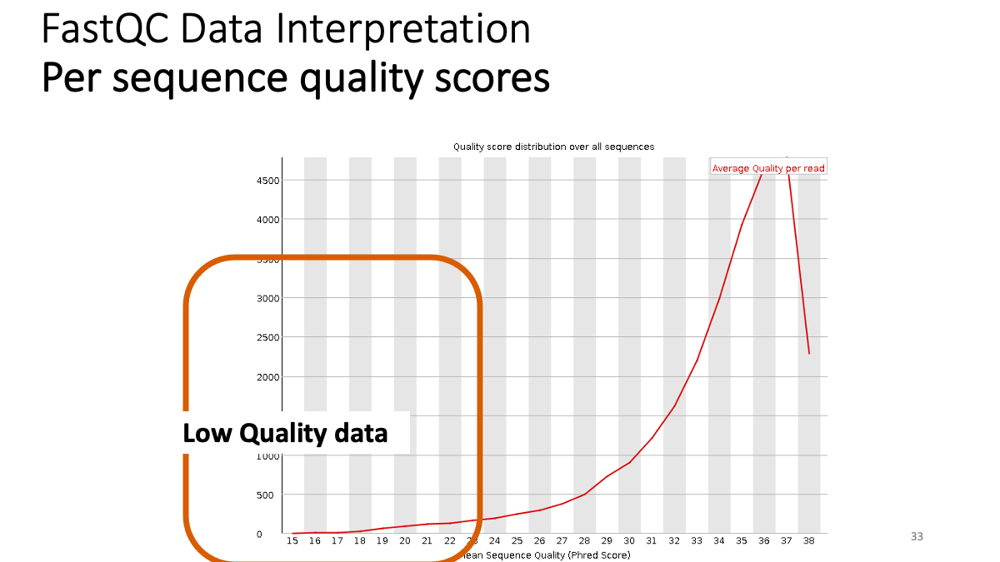
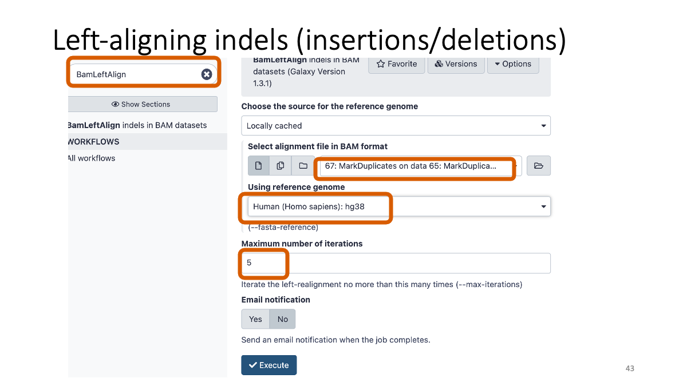
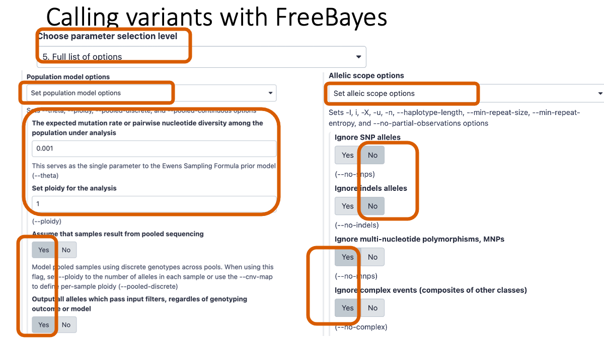
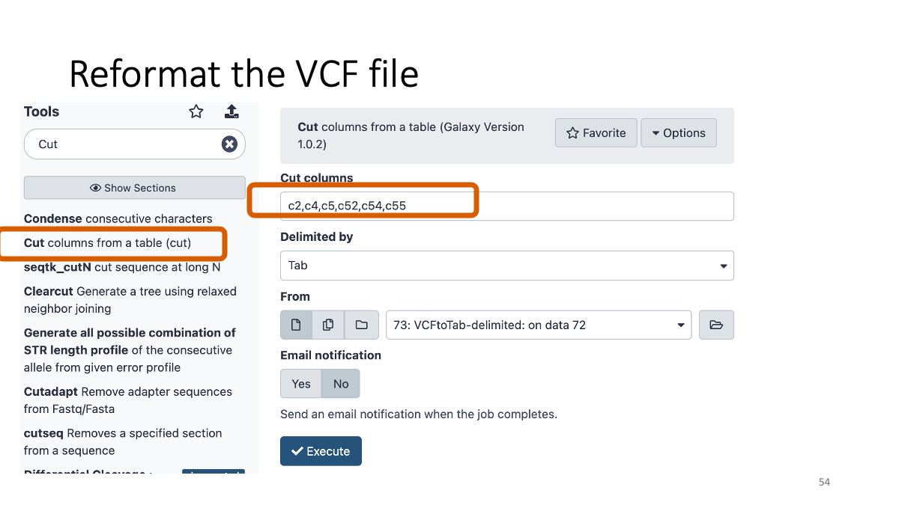
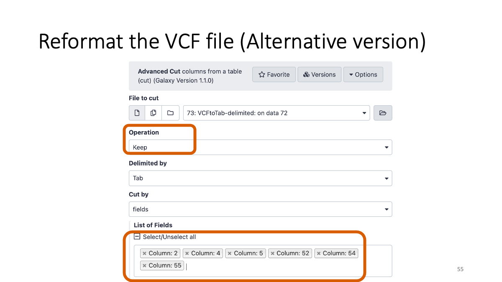
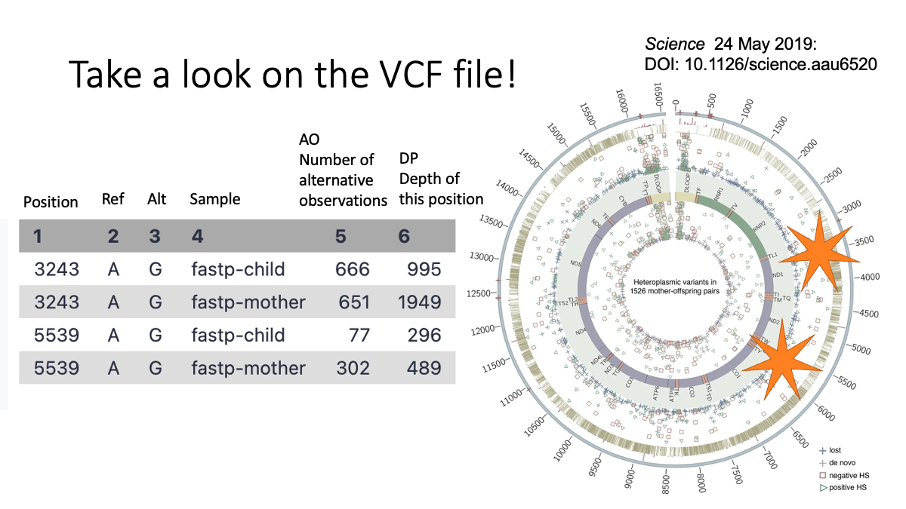

Bio326.genome
Marie Saitou
1/28/2021
Last updated: 2021-02-03
Checks: 1 1
Knit directory: Bio326/
This reproducible R Markdown analysis was created with workflowr (version 1.6.2). The Checks tab describes the reproducibility checks that were applied when the results were created. The Past versions tab lists the development history.
The R Markdown file has unstaged changes. To know which version of the R Markdown file created these results, you’ll want to first commit it to the Git repo. If you’re still working on the analysis, you can ignore this warning. When you’re finished, you can run wflow_publish to commit the R Markdown file and build the HTML.
Great! You are using Git for version control. Tracking code development and connecting the code version to the results is critical for reproducibility.
The results in this page were generated with repository version e424b04. See the Past versions tab to see a history of the changes made to the R Markdown and HTML files.
Note that you need to be careful to ensure that all relevant files for the analysis have been committed to Git prior to generating the results (you can use wflow_publish or wflow_git_commit). workflowr only checks the R Markdown file, but you know if there are other scripts or data files that it depends on. Below is the status of the Git repository when the results were generated:
Ignored files:
Ignored: .DS_Store
Untracked files:
Untracked: BIO326-RNAseq.pptx
Untracked: BIO326-genome.pptx
Untracked: Bio326.genome.html
Untracked: RNAseq.Rplot.pdf
Untracked: workflowR.bio326.R
Untracked: ~$BIO326-genome.pptx
Unstaged changes:
Modified: analysis/Bio326.genome.Rmd
Note that any generated files, e.g. HTML, png, CSS, etc., are not included in this status report because it is ok for generated content to have uncommitted changes.
These are the previous versions of the repository in which changes were made to the R Markdown (analysis/Bio326.genome.Rmd) and HTML (docs/Bio326.genome.html) files. If you’ve configured a remote Git repository (see ?wflow_git_remote), click on the hyperlinks in the table below to view the files as they were in that past version.
| File | Version | Author | Date | Message |
|---|---|---|---|---|
| html | e424b04 | mariesaitou | 2021-02-01 | Build site. |
| html | aebc2f1 | mariesaitou | 2021-02-01 | Build site. |
| html | 5ff0019 | mariesaitou | 2021-02-01 | Build site. |
| Rmd | 4fab7ae | mariesaitou | 2021-02-01 | image data set |
| html | 4fab7ae | mariesaitou | 2021-02-01 | image data set |
| html | b425594 | mariesaitou | 2021-01-28 | Build site. |
| Rmd | f447408 | mariesaitou | 2021-01-28 | Publish the initial files for BIO326 |
| html | 067284e | mariesaitou | 2021-01-28 | Build site. |
| Rmd | 76be303 | mariesaitou | 2021-01-28 | Publish the initial files for BIO326 |
| html | 1fa796d | mariesaitou | 2021-01-28 | Build site. |
| html | 5f38542 | mariesaitou | 2021-01-28 | Build site. |
| html | 2102442 | mariesaitou | 2021-01-28 | Build site. |
| html | ae3dfb5 | mariesaitou | 2021-01-28 | Build site. |
| html | 2e5f89a | mariesaitou | 2021-01-28 | Build site. |
| html | a81d12e | mariesaitou | 2021-01-28 | Build site. |
| Rmd | ab8165a | mariesaitou | 2021-01-28 | wflow_publish(c(“analysis/index.Rmd”, “analysis/Bio326.genome.Rmd”)) |
This workflow is based on Galaxy Training materials aimed for the two-hour courses in Bio326, NMBU 2021. Lecture slide is here: (contains hands-on materials on this page)pdf
The workflow is based on the following materials but modified and updated for Galaxy.no 2021.
0. Goal of this workflow
Objective: Compare the mitochondrial variants between mother and child (human)
We will learn: A.How to conduct “cleaning” of the data, B.How to map the sequence read to refeerence genome, C. How to call genetic variants.
1. Galaxy introduction
1-1. Register and login to Galaxy
Go to https://usegalaxy.no/ or https://usegalaxy.org/ Galaxy is a web platform with various software for genome analyses. You should be able to log in with “Feide” information at galaxy.no (NMBU ID and password)
1-2. Play around with Galaxy

 

1-3. Review the genome analysis workflow
2. Quality Control
2-0. Introduction
During sequencing, the nucleotide bases in a DNA or RNA sample (library) are determined by the sequencer. For each fragment in the library, a short sequence (=read) is generated,.
Modern sequencing technologies can generate a massive number of sequence reads in a single experiment. However, each instrument will generate different types and amount of errors, such as incorrect nucleotides being called. These wrongly called bases are due to the technical limitations.
Therefore, it is necessary to understand, identify and exclude error-types that may impact the interpretation of downstream analysis. Sequence quality control is therefore an essential first step in your analysis. Catching errors early saves time later on.
Objective: Conduct quality control and trimming of sequence data from two individuals, mother and child
We will learn: How to conduct quality control with FastQC, how to interpret FastQC output, how to conduct trimming with fastp.
2-1. Prapere the data
Create a new history.
Import the data set.
Copy and paste the following URLs to import the data:
https://zenodo.org/record/1251112/files/raw_child-ds-1.fq
https://zenodo.org/record/1251112/files/raw_child-ds-2.fq
https://zenodo.org/record/1251112/files/raw_mother-ds-1.fq
https://zenodo.org/record/1251112/files/raw_mother-ds-2.fq
Rename the data for to manage them.
Let’s have a look…
What is written in the FastQ files: Quality scores are recorded as “ASCII” symbol. The code is different in each platform. For example, “B” is quality score “32”, which means more than 30 = “Probability of incorrect base call” is less than “1 in 1000” (accuracy > 99.9%).
2-2. Quality control with fastQC
fastQC (go to the website for details)
Let’s see the result of quality check. Example results “Per base sequence quality”: X-axis is the base position, Y-axis is the read quality. Green is good, yellow is okay, red is not good.
Our results: We see that the ending part ot our reads shows not good quality. -> Trimming. Per sequence quality score. X-axis is the quality score, Y-axis is the observed count. We see that most of the reads show good quality, but still there are some low-quality reads.

Sequence duplication levels. There are some duplication (small peak) due to enrichment bias. These read will be removed in the further step.
2-3. Trimming with fastp
fastp (go to the website for details)
Let’s see how many low-quality reads are removed:
3. Mapping
Now, we are going to map reads to the reference genome (human genome) FastQ format -> BAM format
3-2. Merge the two BAM files
We will merge the mother and child BAM files into one file so that we can handle it easily.
3-3. Remove the PCR duplicates (review 2-2.)
3-4. Left-aligning insertion/deletion variants
he same insertion/deletion can often be placed at multiple positions. To prevent this, we will conduct “Left-aligning” of insertion/deletion variants with "BamLeftAlign. 
3-5. BAM file filtering:
We will filter the bam file with quality and genomic region.
4. Varitnt Calling
4-1. Calling variants with FreeBayes
Let’s call variants from the BAM files and examine variants. BAM format -> VCF (variant fall format)

Taking too long? Here is the vcf file: VCF
4-2. Filtering variants
Filter the variant based on the reliability. There are various “biases” and artifacts that can happen. 
4-3. Reformatting the VCF file
Just reformat VCF file so that human eye can easily read it. 
5. Examine the variants.
We see two variants at position 3243 and 5539. Both are (Reference: A and Alternative:G)  Let’s take a close look on column five and six.  Q: Allele frequency of variants in Mother and Child
Posision 3243 Child : G = 0.67 Mother : G = ???
Posision 5538 Child : G = ??? Mother : G = ???